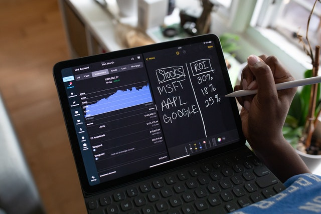

Quem sou eu?

Profissional graduada em Recursos Humanos,
com Vivência com rotinas administrativas, como análise,
cadastramento,boa vivência nas rotinas administrativas,
surda mas nao me limita a nada agora estou mudando de area indo para tecnologia.
minhas habilidades
Flexibilidade
É a atitude para lidar com os imprevistos e contornar os momentos de crise.
Para isso, tem que se "treinar" a improvisação.
Iniciativa
Serve para tornar as ideias boas em prática.
Compreensão interpessoal e empatia
Ter sensibilidade para lidar com todos,
satisfazer os demais e tornar-se o líder do grupo graças à sua empatia.